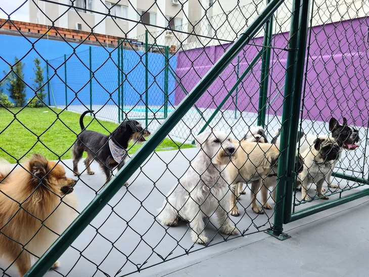
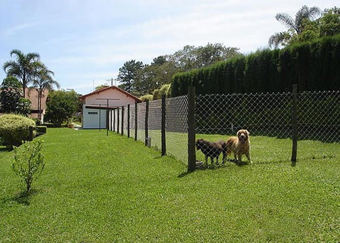

Nosso principal objetivo, além da criação de cães com excelente estrutura e temperamento, é contribuir para um melhor desenvolvimento das qualidades do Golden Retriever, pesquisando e disseminando informações sobre a raça e colocando o resultado de nosso trabalho à prova através da participação em exposições promovidas pelas entidades nacionais.
A qualidade dos nossos cães, reconhecida nas pistas de todo país, atesta a excelente qualidade da criação nacional.


Desde as nossas primeiras ninhadas, nossa preocupação sempre foi a incorporação de novas linhas de sangue, procurando assim contribuir com o desenvolvimento da raça.